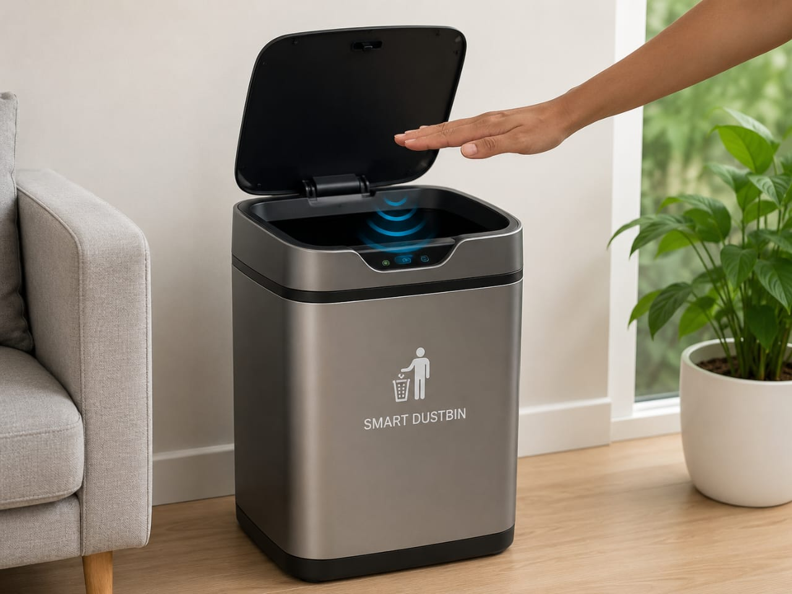

Smart Waste Management for a Cleaner Future
Smart Dustbin is an innovative waste management system designed to improve cleanliness and hygiene in homes, schools, offices, and public places. It uses smart sensors to automatically detect the presence of a user and open the lid without physical contact. The system can also monitor the fill level of the bin and send alerts when it is nearly full.
By reducing human contact and ensuring timely waste collection, Smart Dustbins help maintain a cleaner environment, prevent the spread of germs, and support sustainable waste management practices. This technology contributes to building smarter and greener cities for the future.